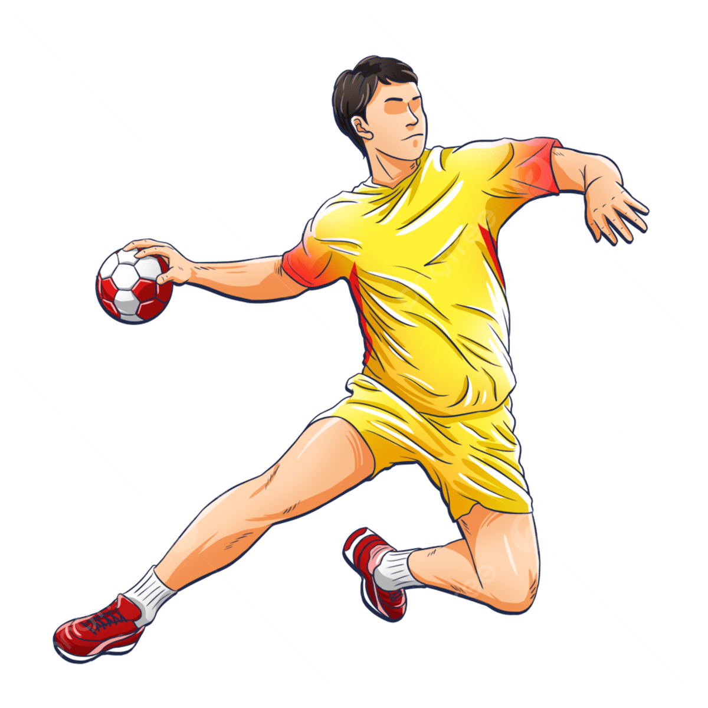
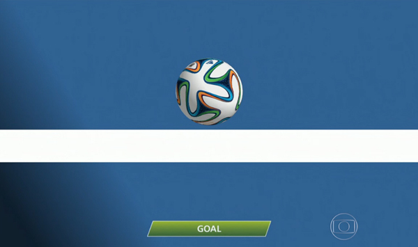
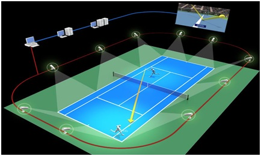
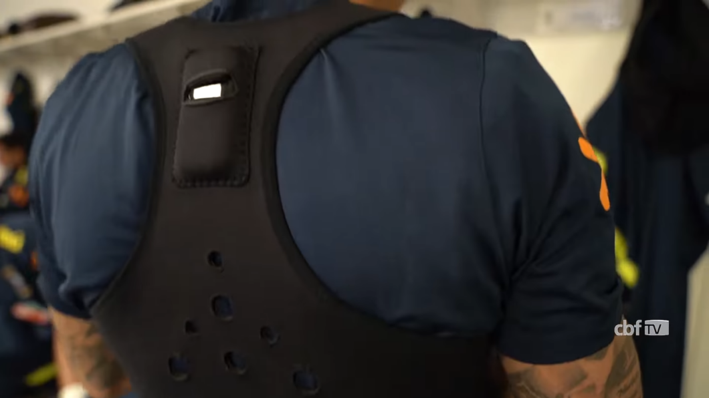

É um sistema de suporte que utiliza uma central de monitores e múltiplas câmeras para revisar lances decisivos. Ele atua em quatro situações específicas: gols, pênaltis, cartões vermelhos diretos e confusão de identidade, servindo como uma ferramenta para corrigir erros humanos claros que podem mudar o rumo de uma partida.

Funciona através de sensores magnéticos ou câmeras de alta velocidade que monitoram a linha de meta. O sistema detecta instantaneamente se a circunferência total da bola cruzou a linha e envia um aviso visual e vibratório para o relógio do árbitro em menos de um segundo, garantindo precisão absoluta em lances duvidosos.

Muito utilizado no tênis e vôlei, esse sistema usa câmeras de alta performance para rastrear a trajetória da bola e criar uma representação gráfica em 3D. Ele permite saber com precisão milimétrica se uma bola caiu dentro ou fora da quadra, sendo o recurso oficial para os desafios solicitados pelos jogadores.

Pequenos dispositivos colocados nos uniformes dos atletas que rastreiam distância, velocidade, aceleração e até o nível de fadiga. No automobilismo e no futebol, esses dados são transmitidos em tempo real para as equipes, permitindo ajustes táticos e a preservação da saúde física dos competidores.